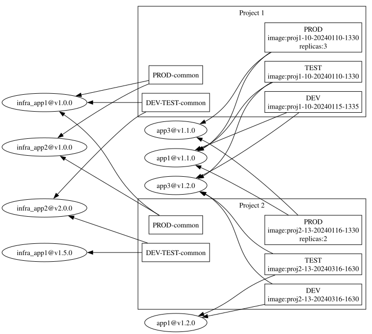

Kustomize deep dive
Petr Studený petr.studeny@etnetera.cz
apply vs. replace;
patch
apply for GitOpskubectl patch - partial update using strategic merge,
json merge or json patchkustomize init --auto-detect
resources:
- base # directory with kustomization.yaml
- service.yaml
- git@github.com:prometheus-operator/prometheus-operator.git?ref=master # git:: deprecated
- https://github.com/mongodb/mongodb-kubernetes-operator.git//config/defaultkind and
name or labelSelectorname and namespace
fields - target:
kind: Deployment
name: my-(back|front)end
patch: |-
- op: add
path: /spec/template/spec/volumes/-
value:
name: import
persistentVolumeClaim:
claimName: import
- op: add
path: /spec/template/spec/containers/0/volumeMounts/-
value:
name: import
mountPath: /data/import
- op: replace
path: "/metadata/annotations/haproxy.org~1forwarder-for"
value: "true"$patch: delete- target:
kind: Service
name: cilium-agent
patch: |-
kind: Service
metadata:
name: cilium-agent
$patch: deletemetadata.name is required but not used.| - | + |
|---|---|
| the source resource must be part of applied manifest | can address list item by content |
| multiple targets | |
| partial string replacement |
kubectl diff -k is noisy
kustomize localize resolve remote
dependencies
helmChart Inflator (wait for more)
KRM functions little containers that help build final manifests

Created with pandoc and reveal.js, from markdown to interactive html;
can be printed to PDF.
Petr Studený @dosmanak